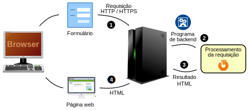

Interação Web Tradicional
Interação Web AJAX

Asynchronous
JavaScript
And
XML
AJAX é um conjunto de tecnologias.
E para unir tudo isso, usamos JavaScript!

Jesse James Garrett, quem cunhou o termo AJAX, explica a fraqueza da interação tradicional:
A abordagem clássica faz sentido tecnicamente, mas não oferece uma boa experiência de usuário.
Enquanto o servidor está processando uma coisa, o que o usuário está fazendo? Isso mesmo, esperando!

Capítulo 24: AJAX